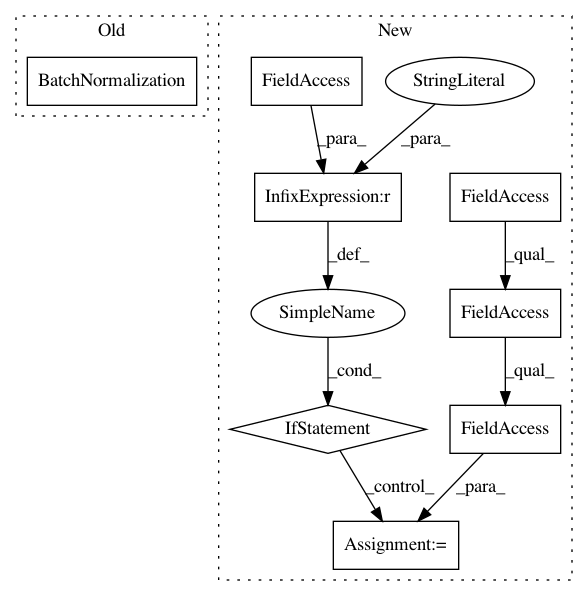

f742426e2280a5699171ee759b7809617218d505,basenji/blocks.py,,attention,#,333
Before Change
// batch norm
if batch_norm:
z = tf.keras.layers.BatchNormalization(
momentum=bn_momentum,
gamma_initializer="zeros",
fused=True)(z)
// residual add
current = tf.keras.layers.Add()([current,z])
After Change
// batch norm
if batch_norm:
if bn_type == "sync":
bn_layer = tf.keras.layers.experimental.SyncBatchNormalization
else:
bn_layer = tf.keras.layers.BatchNormalization
z = bn_layer(
momentum=bn_momentum,
gamma_initializer="zeros")(z)
In pattern: SUPERPATTERN
Frequency: 3
Non-data size: 8
Instances
Project Name: calico/basenji
Commit Name: f742426e2280a5699171ee759b7809617218d505
Time: 2020-08-18
Author: drk@calicolabs.com
File Name: basenji/blocks.py
Class Name:
Method Name: attention
Project Name: calico/basenji
Commit Name: f742426e2280a5699171ee759b7809617218d505
Time: 2020-08-18
Author: drk@calicolabs.com
File Name: basenji/blocks.py
Class Name:
Method Name: conv_block
Project Name: calico/basenji
Commit Name: f742426e2280a5699171ee759b7809617218d505
Time: 2020-08-18
Author: drk@calicolabs.com
File Name: basenji/blocks.py
Class Name:
Method Name: conv_block_2d